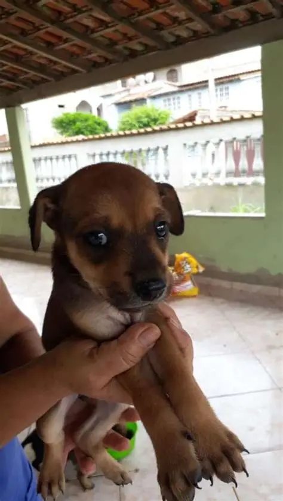
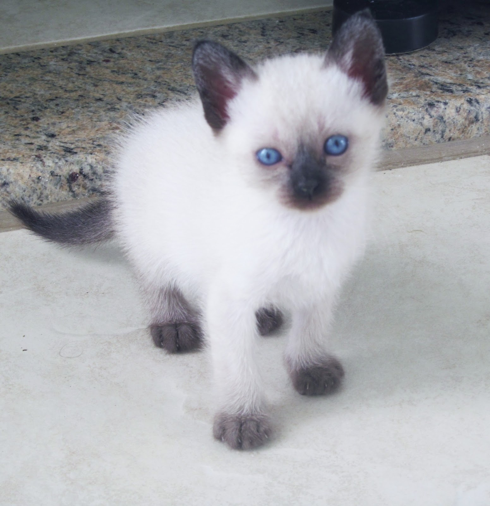

Nossos peludinhos esperam por você 🐶

Bob
Bob é brincalhão, carinhoso e adora correr no parque. Está vacinado e castrado, pronto para ser seu novo melhor amigo!

Mia
Mia é uma cachorra tranquila e docil. Ela adora se aninhar em cantinhos aconchegantes e observar o mundo com seus olhos azuis encantadores. Ideal para quem busca uma companhia silenciosa e cheia de afeto!